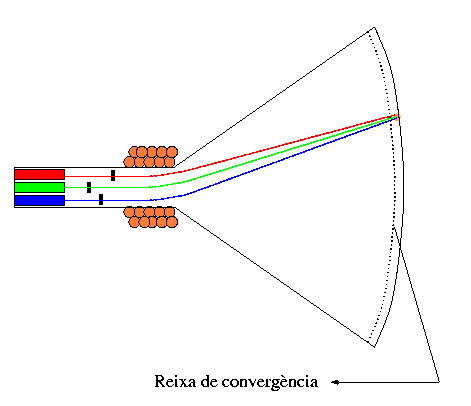
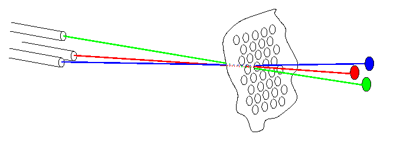

Per tal de poder ensenyar imatges a color, les pantalles a color exploten el mecanisme dels nostres ulls per a percebre els colors, que es discuteix més en detall al capítol 3: Color. Aquí tindrem prou amb saber que podem formar els diferents colors a base de barrejar llums de tres colors: vermell, verd i blau. Per tal de poder presentar una imatge multicolor, doncs, les pantalles de color han de ser capaces d'il luminar cada pixel amb diferents valors d'intensitat de vermell, verd y blau. La manera en que ho fan és triplicant el mecanisme d'una pantalla monocroma, per a disposar de tres canons independents que exciten petits punts de fòsfor vermell, verd i blau dipositats a la pantalla, com mostra la següent figura:
|  |
Els punts de fòsfor es disposen en un reticle regular, sigui alineats o en els vèrtexs de petits triangles. Es col·loquen tan junts que l'ull no els pot distingir (igual que en la pantalla monocroma no podia distingir les diferentes línies d'escombrat), i per tant els percebem com un sol punt d'un color combinació d'aquests tres. Tanmateix, cal a més a més assegurar-se que els electrons emesos pel canó vermell, per exemple, mai incideixen en un punt de fòsfor que no sigui vermell. Per aquest motiu s'interposa una reixa de convergència entre els canons i la pantalla. Aquesta reixa metàl·lica té petits forats pels que poden passar els feixos d'electrons, i la resta els bloqueja. Està disposada de tal forma que un electró emanat pel canó vermell -per exemple-, i que passa per un d'aquests forats, incideix forçosament en un punt de fòsfor vermell, i anàlogament pels altres dos canons:
|  |
Si inspeccioneu una pantalla de color (la del vostre computador o
la d'un televisor, per exemple) des d'aprop i amb una lupa,
distingireu clarament els punts de fòsfor de diferents colors. Com hem
dit, pot ser que no estiguin disposats de la mateixa forma que a la
figura. La seva disposició reflexa però la disposició dels tres canons
d'electrons.